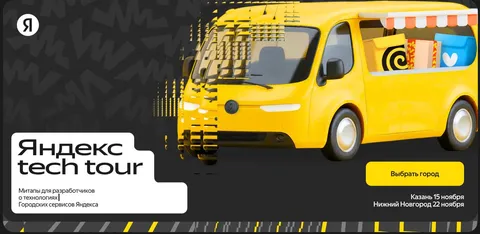

Столице-центричность конференций и митапов частенько удручает жителей других городов. Да и нас тоже. Поэтому мы в третий раз отправляемся в мини-тур по городам. В этом году, правда, только в два, зато какие! Казань и Нижний Новгород примут нас уже меньше, чем через месяц. Если вы - мидл+ разработчик или аналитик, обязательно заглядывайте на огонек!
Мы в программном комитете тура подготовили для вас классные доклады (про технологии, инфру, аналитику и архитектуру) от классных спикеров (из Лавки, Еды и Маркета), а также всякие активности (кейслаб, код-гольф и даже, прости господи, вайбкодинг). Я буду ведущим в Казани, а к нетворку открыт в обоих городах.
Тут все подробности, программа и регистрация
